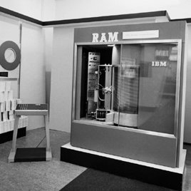

- 1944, Première utilisation de la mémoire dans la machine de Von Neumann
- 1956, Construction des premiers disques durs"RAMAC 305"
- 1962, Création des disques durs amovibles
- 1970, Le disque dur pesait 180 kg
- 1999, Attribution d'un brevet pour les clé USB à l'entreprise M-System
- 2000, Création des cartes mémoire par les industriels : Panasonic, SanDisk et Toshiba, allant jusqu'à 2Go
- 2001, Les clés USB commercialisée font 1Go
- 2003, Création des cartes miniSD, allant jusqu'à 32Go
- 2005, Création des cartes microSD, allant jusqu'à 2To
- 2007, Les clés USB font maintenant 16Go
- 2009, Création des clés USB 128 et 256 Go
- 2013, Création des clés USB 512Go et 1To
- 2017, Création des clés USB 2To